ARVI SA · Shopify redesign proposal · October 2026
The Arvino boutiques in Melano, Lugano and Zurich are pale oak galleries in which every bottle sits in its own lit niche. This proposal brings that room online, built on Shopify Dawn 16 and ARVI's real catalogue.
Every screen below is an actual rendering of the theme files with ARVI's live products, prices and photographs. There are no mock-ups.
The gap
Customers told ARVI the website feels more basic than the stores. Here are the current site, the Shopify work in progress, and the proposed first screen at the same size.
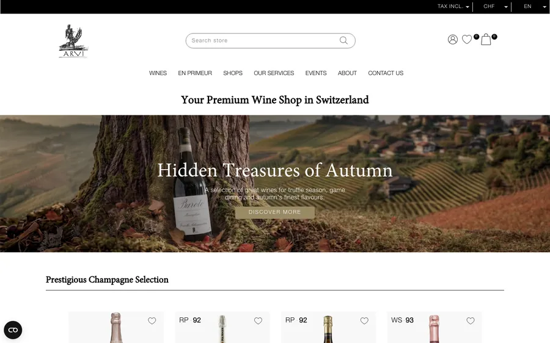
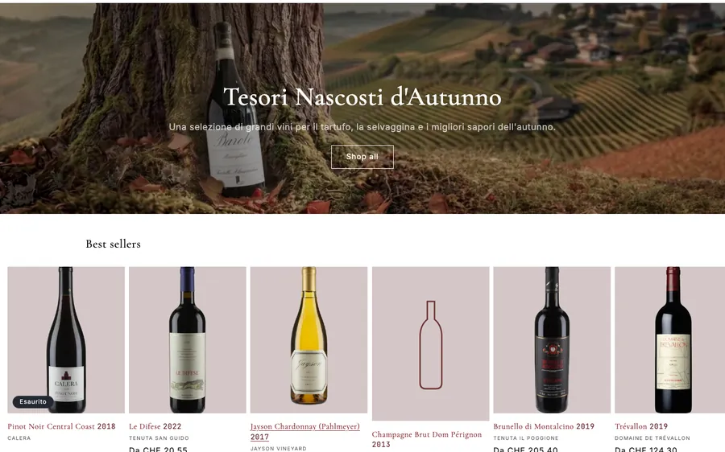
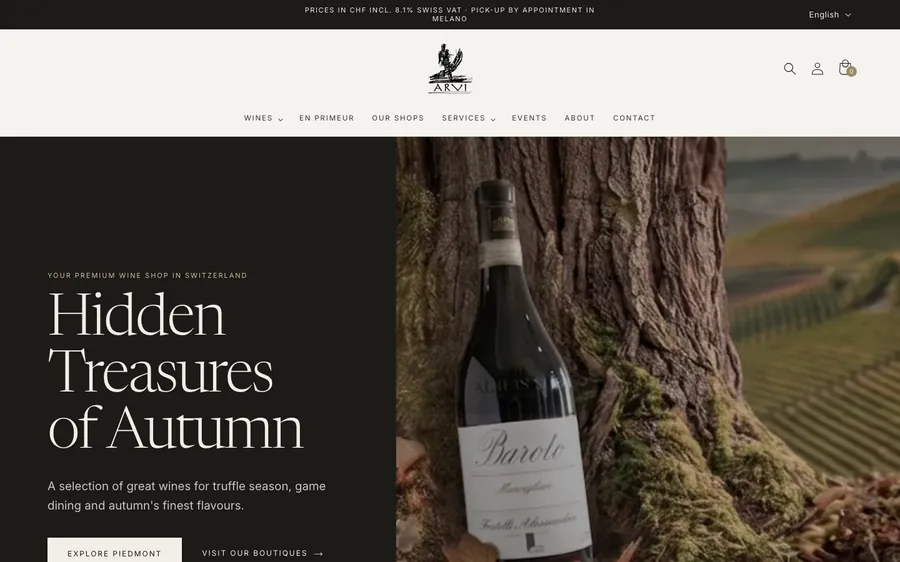
Art direction
Direction A is built from ARVI's own colour tokens and the boutiques' materials. B was too generic for a house with thirty years of history. C was cellar-dark, which contradicts the bright stores and leans on gold-on-black, a wine-site cliché.
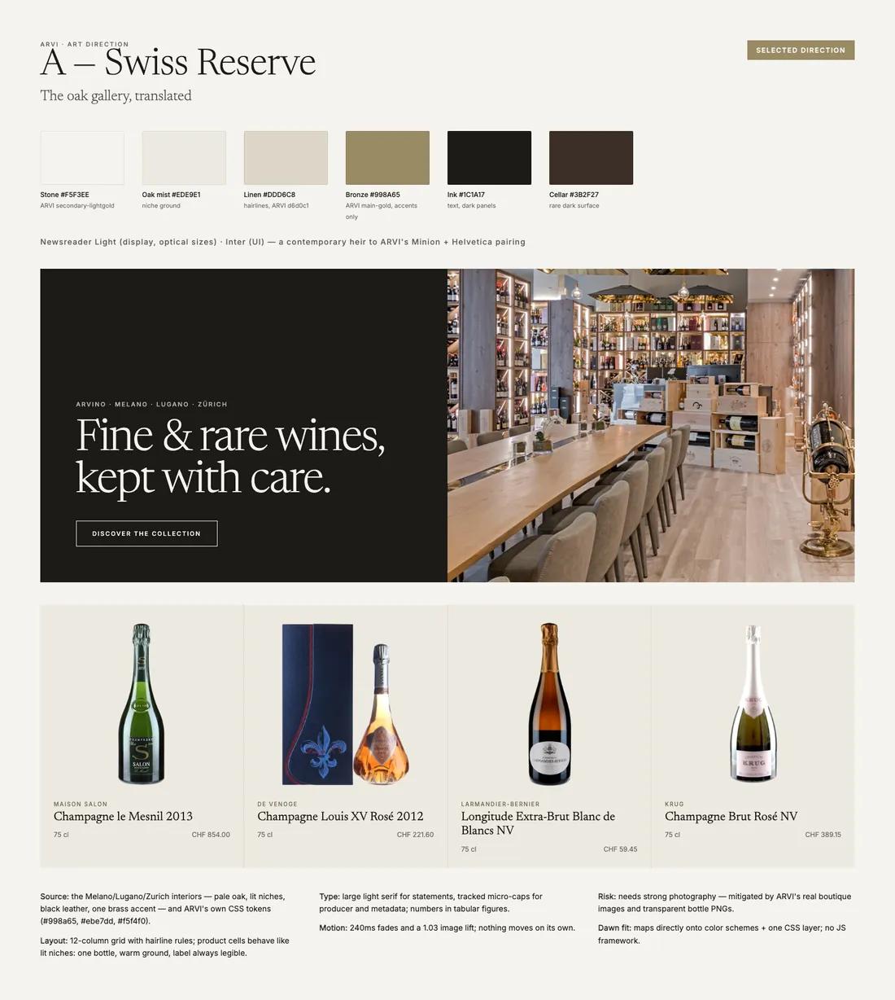
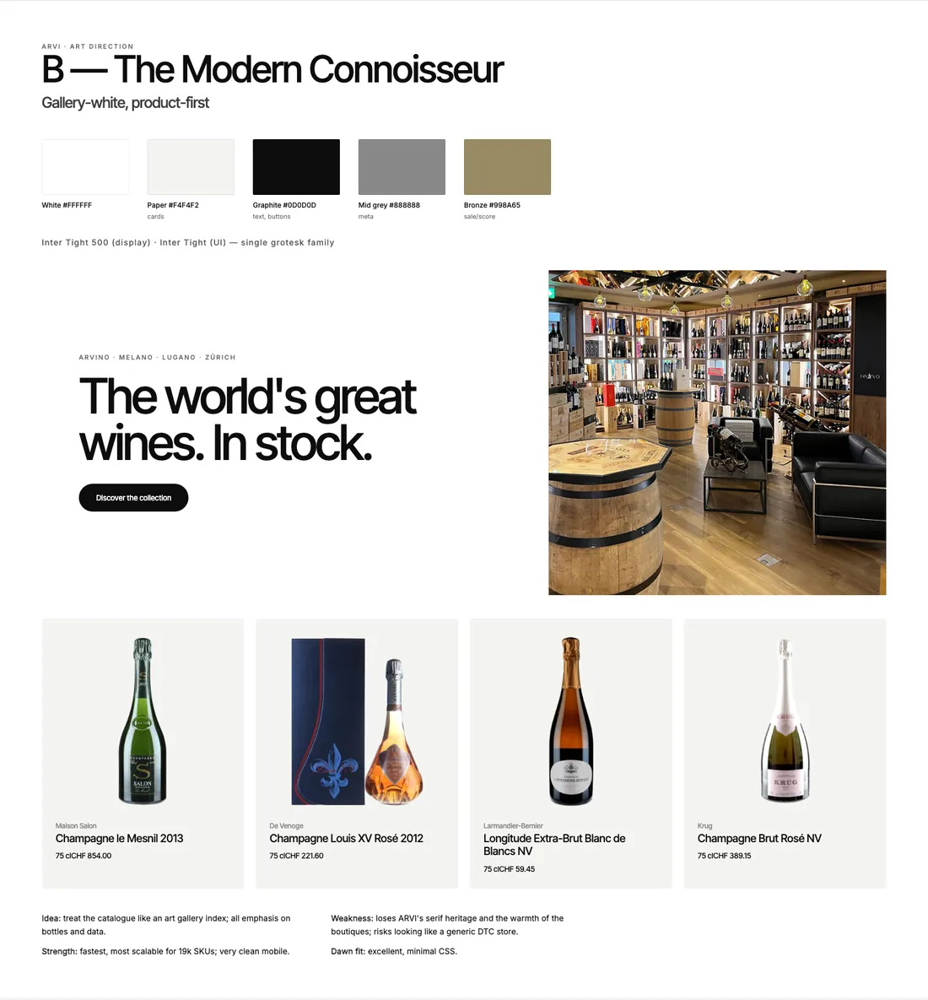
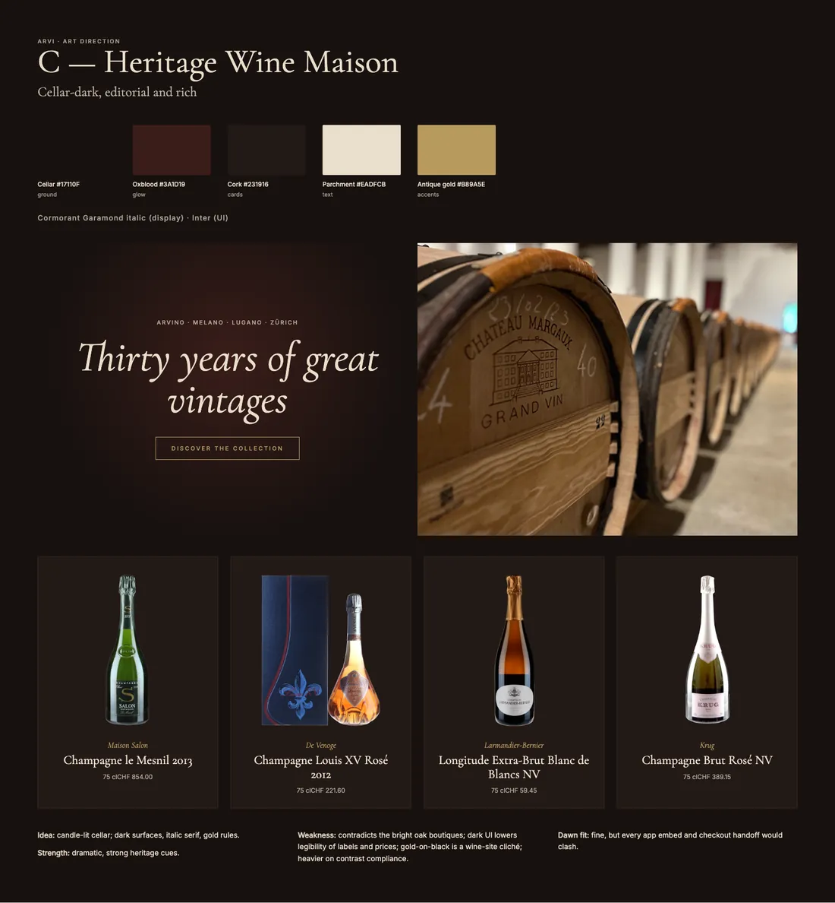
Homepage · 1440 px
Campaign hero, the great regions, Champagne selection, the ARVI cellar, the Icons index, the three boutiques, why buy from ARVI, and services. Scroll inside the frame to see the full page.
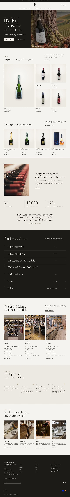
In motion
These are screen recordings of the theme in a browser. Motion stays quiet: a single settle on the hero, short reveals, and bottles lifting slightly on hover.
Product page
Producer, origin, price, size and packaging, then a clean facts table drawn from ARVI's metafields. Below sits an index of all thirteen Salon vintages, each with its status (available, sold out, viewing). Critic scores appear only once ARVI connects its own critic metafields; nothing is shown without real data.
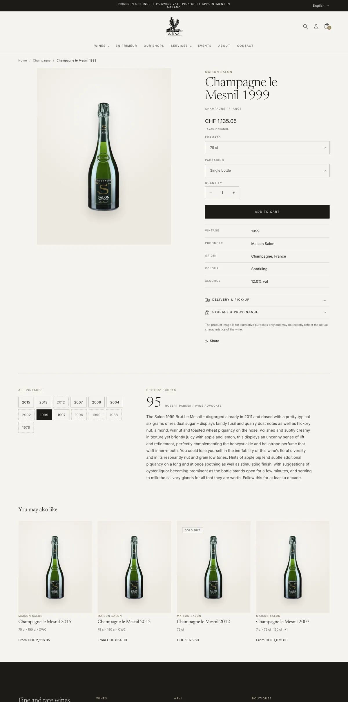
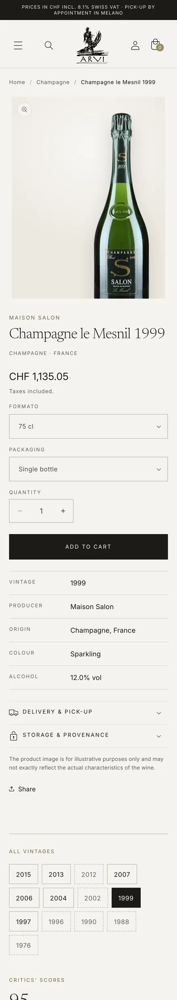
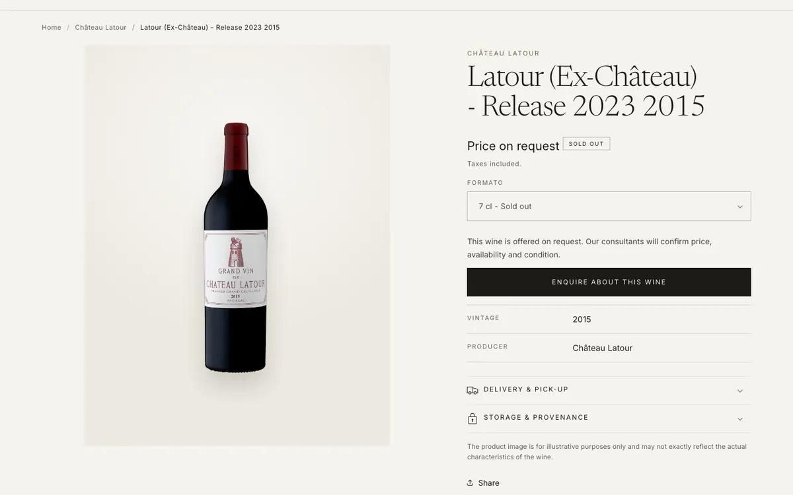
Many rare bottles in the catalogue carry no published price. Instead of showing "CHF 0.00", the theme reads "Price on request", hides Add to cart, and offers a prefilled enquiry to ARVI's consultants.
The size and packaging selectors are the work-in-progress team's own script, reused unchanged. The theme only relabels "75.00" as "75 cl".
Collections & search
These are the store's real filters (size, vintage, region, colour, producer and price) in a quiet left rail, with bottles shown like lit niches. Quick add appears on hover, and formats read "75 cl · 150 cl · OWC".
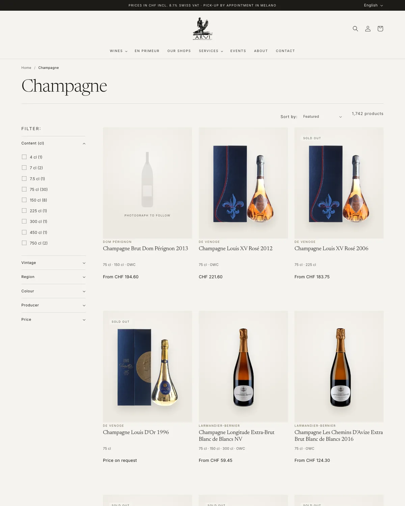
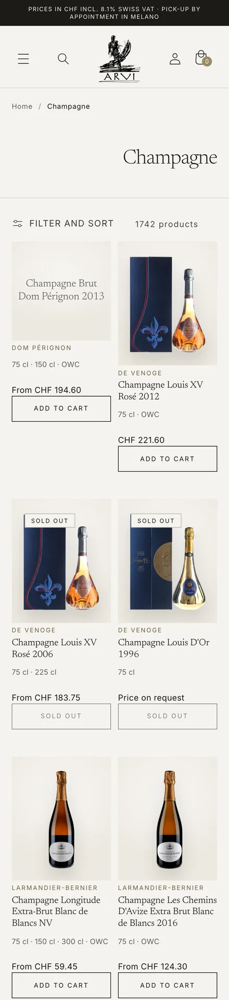
Boutiques & service
The boutiques page carries addresses, hours and structured store data, so the shops appear correctly in search. The FAQ is ARVI's own sixteen answers, also published as structured data for answer engines.
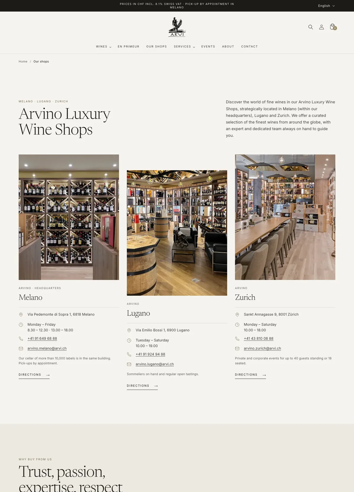
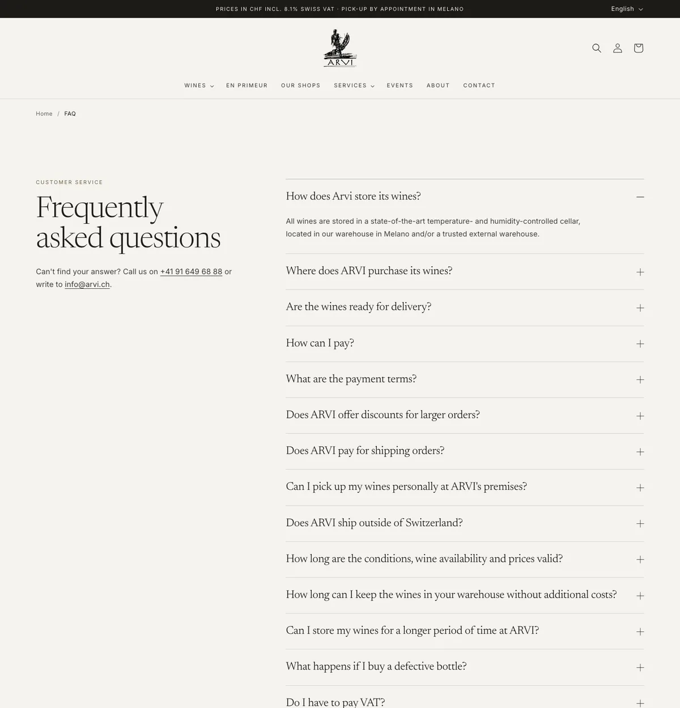
Responsive
The first screen at five widths. The QA run found no horizontal overflow on any of the seven pages at six widths.
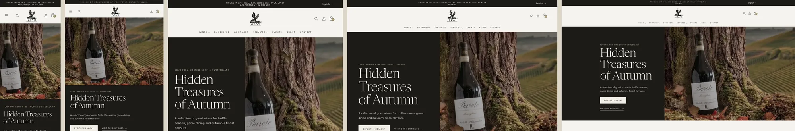
Design system
The palette starts from ARVI's existing web colours (bronze #998A65 and the light golds) and the boutiques' oak, ink and brass. Bronze is used only for labels, rules and icons.
Verified
These checks ran against the theme rendered locally with the real catalogue. Checkout, apps and live filtering still need testing on the store, as an unpublished theme.
Next steps